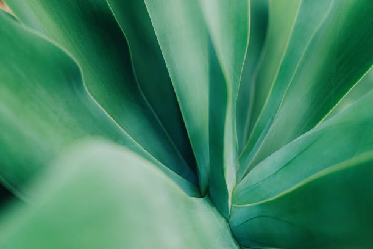

Kyra Gillard: Cancer Therapeutics and Immunology
Stanford doctoral student Kyra Gillard shares her research on her lab's novel cancer treatment for solid tumors, offering her insights on the future of cell therapeutics and immunology.

Stanford doctoral student Kyra Gillard shares her research on her lab's novel cancer treatment for solid tumors, offering her insights on the future of cell therapeutics and immunology.